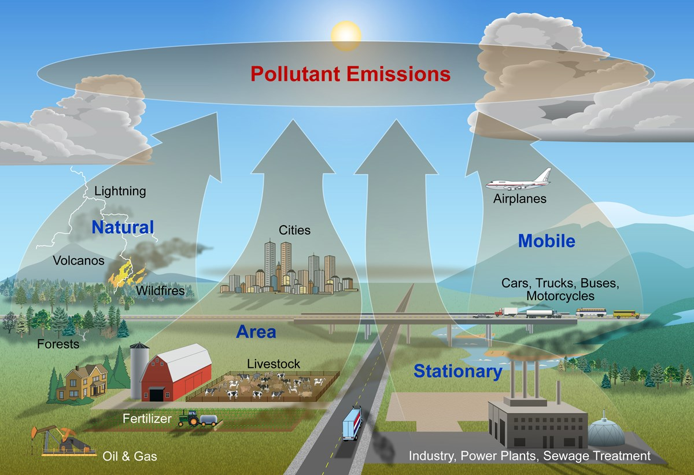
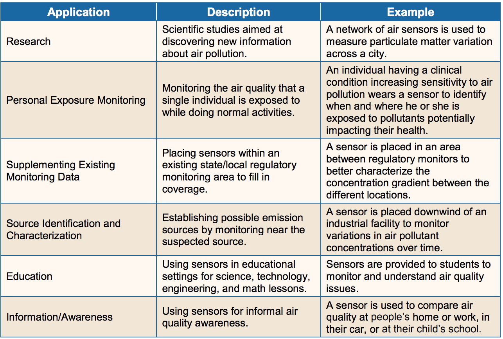

Carbon dioxide (CO₂): 410 ppm
(280 ppm pre-industrial level)
Sulfur oxides (SOₓ): particularly SO2, produced by volcanoes and industrial processes, combustion of coal and petrol. Further oxidation of SO2 + NO2 => H2SO4 (Sulfuric acid) => Acid Rain. Within 5 min of exposure can cause cough, wheeze, chest tightness and bronchoconstriction. Aggravates pre-existing respiratory disease in asthmatics. Contributes to the acidification of soil and surface water.
Nitrogen oxides (NOₓ) – Particularly NO₂ is a reddish-brown toxic gas with a characteristic sharp, biting odor. Reacts with ammonia and moisture to form nitric acid. Aggravates respiratory symptoms, particularly in asthmatics, children, and older adults; increases susceptibility to respiratory infection.
Carbon monoxide (CO) – Colorless, odorless, toxic yet non-irritating gas, product of combustion of fuel such as natural gas, coal or wood. Vehicular exhaust contributes to the majority of carbon monoxide let into our atmosphere. Creates smog, reduces the amount of oxygen reaching organs, linked to lung disease and disruptions to the natural environment and animals.
Volatile organic compounds (VOCs): Benzene, Ethylene Glycol, Formaldehyde, Methylene Chloride, Tetrachloroethylene, Toluene, Xylene, 1,3-Butadiene, Methane – strong greenhouse gas. React with NOₓ in sunlight to from O₃. Known or suspeceted carcinogens, cause eye/nasal irritation, asthma.
Particulate matter (PM), or fine particles: tiny particles of solid or liquid suspended in a gas.
PM2.5 Fine Particles ≤ 2.5 µm
PM10 2.5 µm ≤ Coarse ≤ 10 µm
Linked to respiratory infections, heart disease, decreased lung function, lung cancer. More harmful to heart/lung patients, can cause premature death.
Ground Level Ozone O₃ causes irritations, cough, chest pain, congestion, choking, reduced lung capacity, inflamed lung linings. Depending on antioxidants, may take 1h for symptoms to appear.
Also injures plant leaves, reduces photosynthesis, impaires reproduction and growth.
Lead (Pb) neurotoxin accumulating in soft tissues, bones, damaging nervous system, causing neurological disorders, IQ loss, impacts memory, behavior.
1970s: tetraethyllead was removed from gasoline, % of people with elevated blood lead levels: 78% –> 2%
Most at risk are People with Cardiovascular/Respiratory Diseases, Children, Active People, Older Adults.
Risk increases with prolonged exposure, such as outdoor activity, and long or heavey exertion, which cause hard breathing.

Power Generation, Waste Disposal (CH₄ CO₂) and other Industry
Agriculture (60% of global N₂O, 50% of methane CH₄ emissions)
Domestic (coal, gas heaters, fires)
Road Transport (replaced coal smoke as major concern)
how to achieve big change?
take
small steps
what pollution source is of highest concern?
how can we change, behavior to have impact
Let's begin with individuals and private cars!
Exhaust Emissions
| Gas | Diesel | Gasoline |
|---|---|---|
| N₂ | 67% | 71% |
| CO₂ | 12% | 14% |
| CO | 0.1% | 12% |
| H₂O | 11% | 13% |
| O₂ | 9% | |
| NOₓ | 1000 | 50 ppm |
| PM | 510 | 200 mg/km |
| CH₂O* | 70 | 30 mg/km |
| PAH** | 220 | 40 mg/km |
Reducing car use, cold starts, rapid accelerations
Avoiding leaving engine on when idle
Car pooling/sharing, consolidating trips, electric cars
Opting for walking, biking, public transport
Local authority: restrict traffic, park & ride, urban plan
New generation of low-cost, portable air quality sensors* for a wide range of applications
* early stage of development, many not yet validated
Uses for Air Quality Sensors
| AQI | ||
|---|---|---|
| 0 - 50 | Good | Air quality is considered satisfactory, and air pollution poses little or no risk. |
| 51 - 100 | Moderate | Air quality is acceptable; however, for some pollutants there may be a moderate health concern for a very small number of people who are unusually sensitive to air pollution. |
| 101 - 150 | Unhealthy (Sensitive) | Members of sensitive groups may experience health effects. The general public is not likely to be affected. |
| 151 - 200 | Unhealthy (Everyone) | Everyone may begin to experience health effects; members of sensitive groups may experience more serious health effects. |
| 201 - 300 | Very Unhealthy | Health alert: everyone may experience more serious health effects. |
| 301 - 500 | Hazardous | Health warnings of emergency conditions. The entire population is more likely to be affected. |
Air quality index is piecewise linear function of the pollutant concentration.
Converting from concentration to AQI this equation:

where:
- = the (Air Quality) index,
- = the pollutant concentration,
- = the concentration breakpoint that is ≤ ,
- = the concentration breakpoint that is ≥ ,
- = the index breakpoint corresponding to ,
- = the index breakpoint corresponding to .


| O3 (ppb) | O3 (ppb) | PM2.5 (µg/m3) | PM10 (µg/m3) | CO (ppm) | SO2 (ppb) | NO2 (ppb) | AQI | AQI |
| Clow - Chigh (avg) | Clow - Chigh (avg) | Clow- Chigh (avg) | Clow - Chigh (avg) | Clow - Chigh (avg) | Clow - Chigh (avg) | Clow - Chigh (avg) | Ilow - Ihigh | Category |
| 0-54 (8-hr) | - | 0.0-12.0 (24-hr) | 0-54 (24-hr) | 0.0-4.4 (8-hr) | 0-35 (1-hr) | 0-53 (1-hr) | 0-50 | Good |
| 55-70 (8-hr) | - | 12.1-35.4 (24-hr) | 55-154 (24-hr) | 4.5-9.4 (8-hr) | 36-75 (1-hr) | 54-100 (1-hr) | 51-100 | Moderate |
| 71-85 (8-hr) | 125-164 (1-hr) | 35.5-55.4 (24-hr) | 155-254 (24-hr) | 9.5-12.4 (8-hr) | 76-185 (1-hr) | 101-360 (1-hr) | 101-150 | Unhealthy for Sensitive Groups |
| 86-105 (8-hr) | 165-204 (1-hr) | 55.5-150.4 (24-hr) | 255-354 (24-hr) | 12.5-15.4 (8-hr) | 186-304 (1-hr) | 361-649 (1-hr) | 151-200 | Unhealthy |
| 106-200 (8-hr) | 205-404 (1-hr) | 150.5-250.4 (24-hr) | 355-424 (24-hr) | 15.5-30.4 (8-hr) | 305-604 (24-hr) | 650-1249 (1-hr) | 201-300 | Very Unhealthy |
| - | 405-504 (1-hr) | 250.5-350.4 (24-hr) | 425-504 (24-hr) | 30.5-40.4 (8-hr) | 605-804 (24-hr) | 1250-1649 (1-hr) | 301-400 | Hazardous |
| - | 505-604 (1-hr) | 350.5-500.4 (24-hr) | 505-604 (24-hr) | 40.5-50.4 (8-hr) | 805-1004 (24-hr) | 1650-2049 (1-hr) | 401-500 |
- Question are NOₓ levels higher at rush hour?
- Approach who, what,where,when,how
- Location placing sensors
- Quality sensor accuracy, precision, bias, averaging time
- Measurement calibartion, maintenance, data review & validation
- Analyze & Communicate Results
- Motivate Poeple to Act
Use a spacebar or arrow keys to navigate.
Press 'P' to launch speaker console.